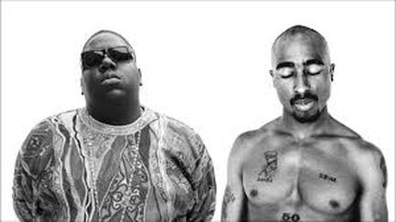

Why?
"Why? Cuz, why not?"
Nick and Sanghyuk
No really, why?
We believed that in addition to rap being something to enjoy, Sang Hyuk and I thought that there was something more to it. The two of us bonded over J. Cole and Kendrick Lamar, and the raw lyricism they brought into the rap game. After ping ponging ideas off each other, we both realised that there are others out there with whom we could share and develop our ideas. Thus, Rhythm and Poetry was born.
Our Goals
We believe that outside of being entertaining there's a greater meaning behind Hip-Hop. Our club focuses on critically analyzing rap, looking for common themes such as biracial identity, segregation and the power of wealth in modern-day society. We'll also be looking at figures such as Kanye West, and discuss why they are so influential and what is it about them that appeals to people.
Publications
Our goal is to spread our word out there, either through a publication of our own or through the school magazine. We have wonderful illustrators who have agreed to add their drawings to supplement our analyses.
A Lasting Journey
We hope to run this club until we leave high school and we hope you will be in this club until you leave high school too.